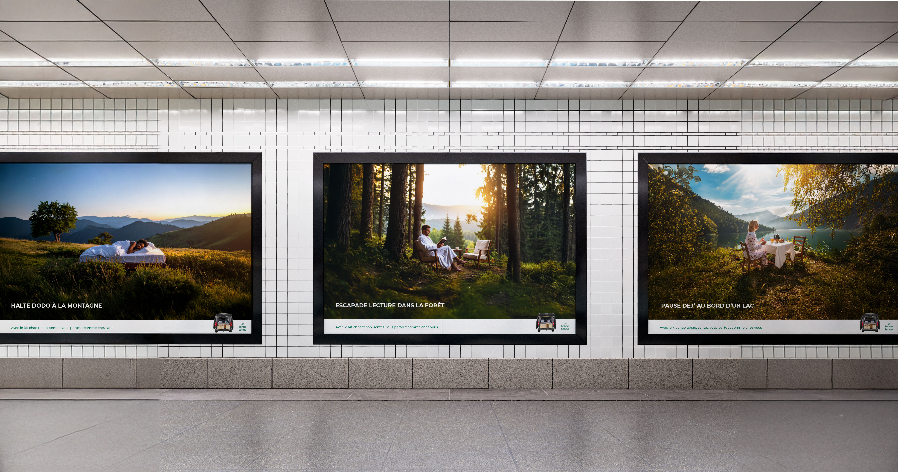
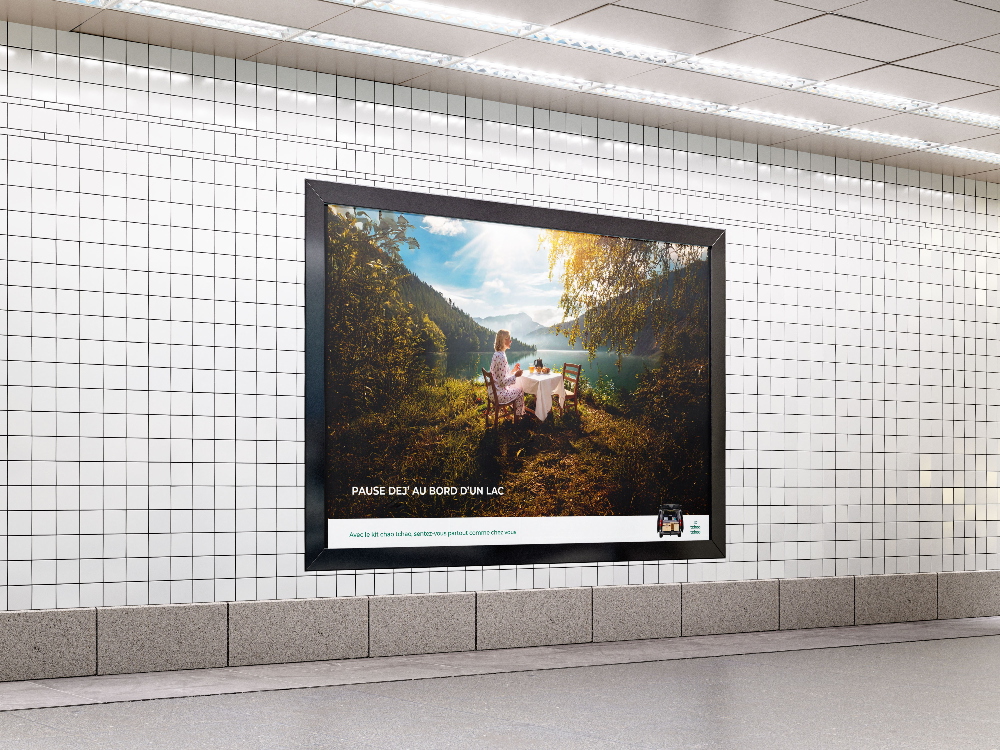
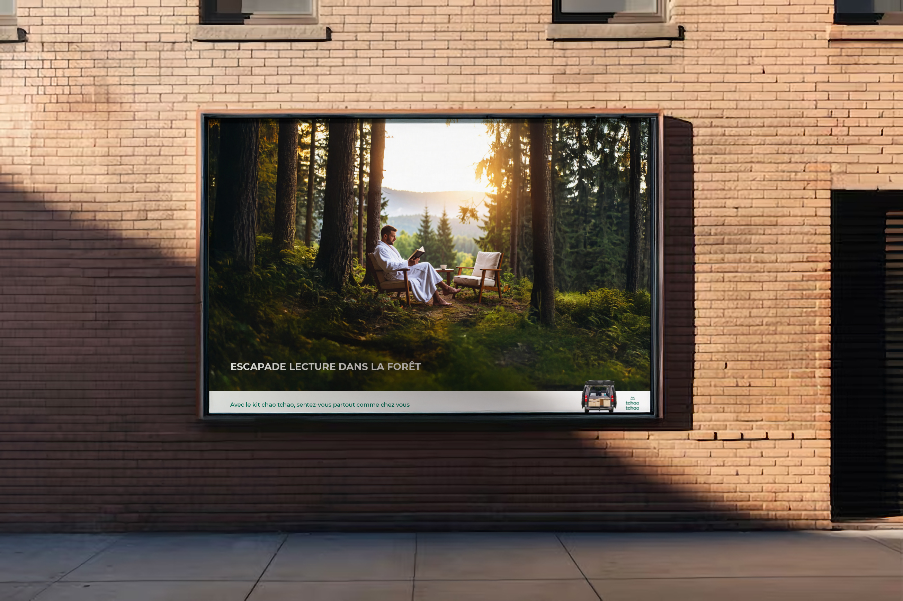
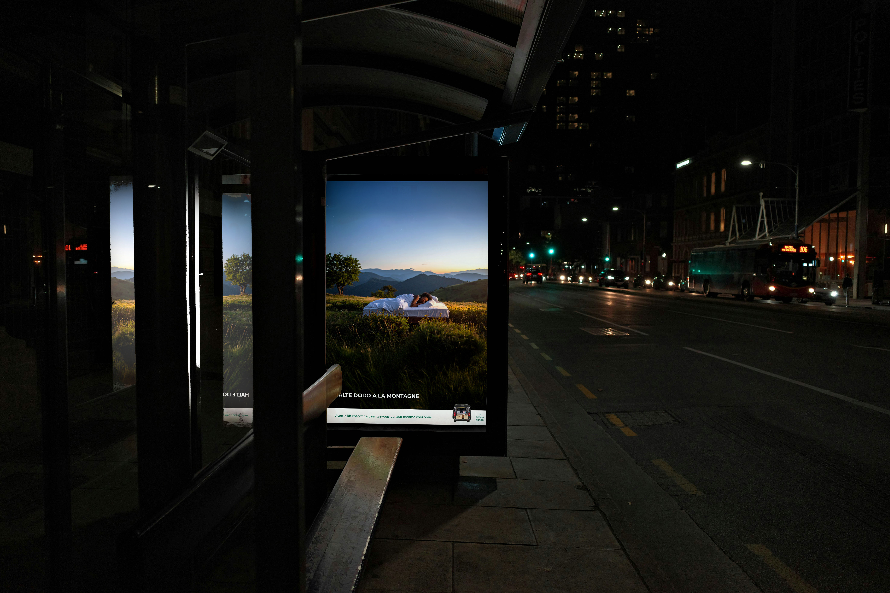
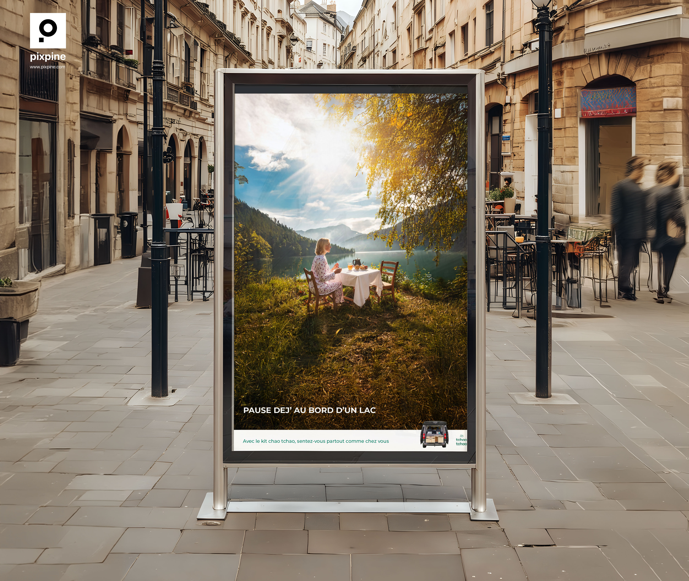

Ce projet consiste à créer une campagne publicitaire pour faire connaître TchaoTchao, une marque qui rend la vanlife accessible grâce à des kits d’aménagement amovibles transformant votre voiture en véritable van de voyage.
La campagne publicitaire de TchaoTchao s’appuie sur une idée centrale : transposer le confort du quotidien dans des espaces naturels, afin de rendre la vanlife accessible, rassurante et désirable.
Les visuels montrent des scènes familières, réalisées en pleine nature. Ces gestes simples, habituellement associés à l’espace domestique, sont déplacés hors de la maison, créant un décalage visuel fort et immédiatement compréhensible.
L’accroche renforce cette lecture en associant un mot évoquant la pause ou l’évasion, un lieu naturel, puis une action quotidienne exprimée pour comprendre ce à quoi on peut avoir accès de manière spontanée grâce au kit.




